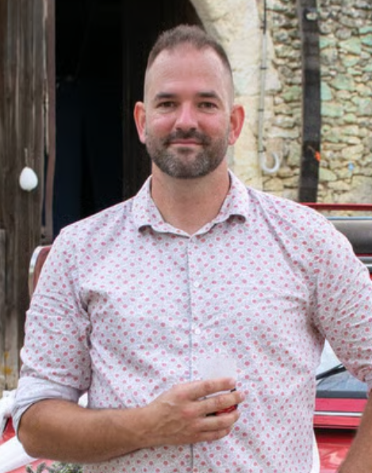

Schrijver · Frankrijk
Ik ben Nederlander en woon al zo'n 25 jaar in Frankrijk, in de Gers. (Ja! Dat is best lang…)
Van beroep ben ik elektricien, loodgieter en airco-installateur.
Maar… ik heb ook een paar hobby's. Motorrijden, fotografie… en boeken schrijven.
Mijn eerste boeken zijn in het Frans verschenen: een technisch boek over het huis, en twee bundels microverhalen: Un instant, ou Deux… en Un instant, ou Trois…
En nu ook in het Nederlands: Een moment, of Twee… Met dank aan mijn familie, en vooral aan oom Fred, die mij geholpen heeft met de vertaling.
Je zal lachen, giechelen, verrast zijn… maar ook huilen…
En er komt nog meer aan!